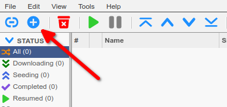
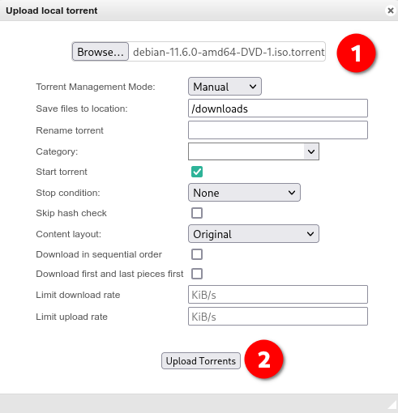
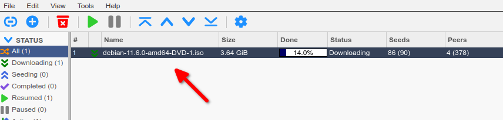
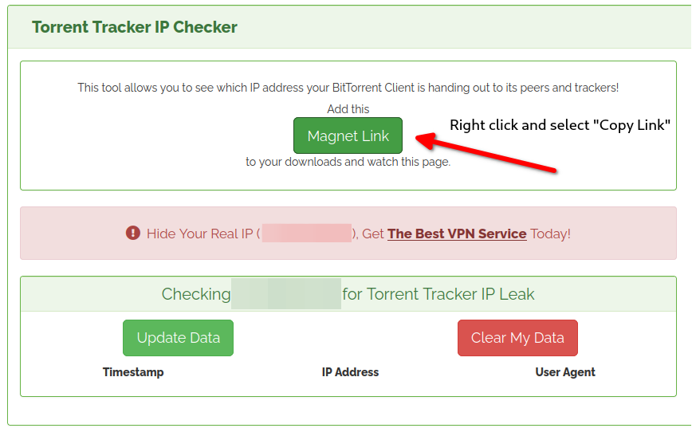
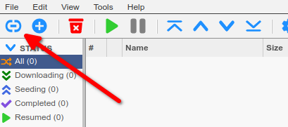
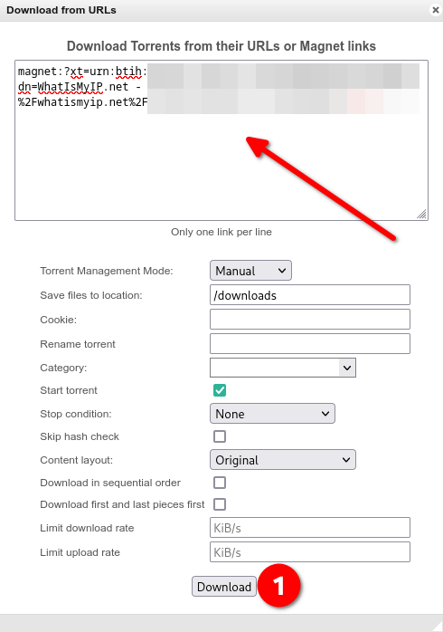
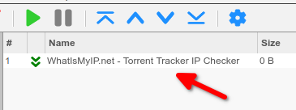
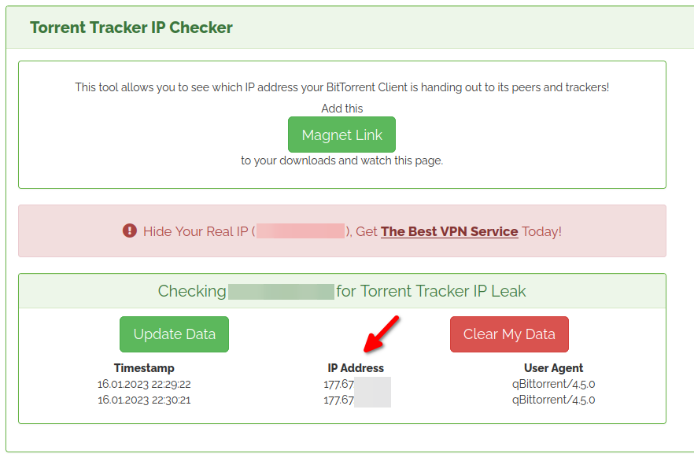

Advanced Torrenting with YAMS 🌊¶
While Sonarr and Radarr handle most of your downloads automatically, sometimes you might want to download something manually. Let's explore how to do that safely!
Manual Downloads 📥¶
Adding Torrent Files¶
- Open qBittorrent at
http://{your-ip}:8081 -
Click the "+" icon or "Add torrent file" button:

-
Select your .torrent file and click "Upload Torrents":

-
Watch your download progress:

{kind=link}
{kind=link}
{kind=link}
Finding Your Downloads¶
When your download finishes, find it in your media folder under the "downloads" directory:
/srv/media$ tree downloads/torrents/
downloads/torrents/
└── your-downloaded-file.iso
0 directories, 1 file
Safety First: IP Leak Testing 🛡️¶
Even with a VPN, it's good practice to verify that your real IP isn't leaking. Here's how to do a thorough check:
Using the IP Checker¶
-
Visit whatismyip.net's Torrent Checker and grab their test magnet link:

-
In qBittorrent, click "Add Torrent Link":

-
Paste the magnet link and click "Download":

-
You'll see a new torrent called "Torrent Tracker IP Checker" in your list. Don't worry - it won't actually download anything!

-
Back on the checker website, you'll see your torrent client's IP:

{kind=link}
{kind=link}
{kind=link}
{kind=link}
{kind=link}
Verifying the Results 🔍¶
For proper privacy protection, check that:
1. The reported IP is different from your real IP address
2. The IP matches what yams check-vpn reports
3. The country shown matches your VPN server location
Pro Tips for Safe Torrenting 🎯¶
-
Always Verify VPN First
Do this before starting any downloads! -
Use the Kill Switch YAMS configures qBittorrent to only use the VPN network interface. If the VPN drops, downloads stop automatically.
-
Regular Testing
- Run the IP leak test monthly
- Check VPN status before large downloads
-
Monitor qBittorrent's connection status
-
Download Organization
- Use labels for different types of content
- Set up category-specific download folders
-
Remove completed torrents regularly
-
Enable Port Forwarding
- Check our Port Forwarding Guide
- Significantly improves download speeds
- Works automatically with ProtonVPN
Blocking Dangerous File Types 🦠¶
Protect yourself from malware and viruses by configuring qBittorrent to automatically block potentially dangerous file extensions. This prevents malicious files from being downloaded even if they're included in an otherwise legitimate torrent.
Setting Up File Extension Blocking¶
- Open qBittorrent at
http://{your-ip}:8081 - Navigate to Tools → Options → Downloads
- Find the "Excluded file names" section
- Copy and paste this comprehensive blocklist of dangerous extensions:
*.apk;*.bin;*.dll;*.exe;*.msi;*.txt;*.url;*.001;*.7z;*.7z*;*.arj;*.arj*;*.b1;*.b1*;*.b6z*;*.b6z;*.bh*;*.bh*;*.br*;*.br;*.bz2*;*.bz2;*.cab*;*.cab;*.dar*;*.dar;*.dmg*;*.dmg;*.gz*;*.gz;*.ha*;*.ha;*.ice*;*.ice;*.ipa*;*.ipa;*.iso*;*.iso;*.kgb*;*.kgb;*.lz*;*.lz;*.partimg*;*.partimg;*.rar*;*.rar;*.sda*;*.sda;*.sea*;*.sea;*.st*;*.st;*.tar*;*.tar;*.tbz2*;*.tbz2;*.tgz*;*.tgz;*.tlz;*.tlz;*.txz*;*.txz;*.wim*;*.wim;*.xz*;*.xz;*.z*;*.z;*.zip*;*.zip;*.zipx*;*.zipx;*.zpaq*;*.zpaq;*.zst*;*.zst;*.zz*;*.zz;*.accda;*.accdb;*.accdc;*.accde;*.accdr;*.accdt;*.accdu;*.cfg;*.conf;*.csv;*.doc;*.docm;*.docx;*.dotm;*.dotx;*.duarcfg;*.ecf;*.env;*.eps;*.hta;*.html;*.ini;*.inf;*.info;*.inx;*.job;*.json;*.jtrrcfg;*.md;*.netcfg;*.netccfg;*.netecfg;*.netgcfg;*.ods;*.one;*.pdf;*.php;*.pot;*.potm;*.potx;*.ppa;*.ppam;*.pps;*.ppsm;*.ppsx;*.ppt;*.pptm;*.pptx;*.properties;*.prx;*.prxe;*.ps;*.pub;*.puff;*.rc;*.reg;*.rtf;*.sldm;*.sldx;*.sumocfg;*.toml;*.wbk;*.xaml;*.xlam;*.xls;*.xlsb;*.xlsm;*.xlsx;*.xlm;*.xlt;*.xltm;*.xltx;*.xml;*.xsd;*.yaml;*.yml;*.4DB;*.4DC;*.4DD;*.BSON;*.CDB;*.CRYPT1;*.CRYPT10;*.CRYPT5;*.CRYPT6;*.CRYPT7;*.CRYPT8;*.CRYPT9;*.DBC;*.DB;*.DB-JOURNAL;*.DB-WAL;*.DDL;*.FMP12;*.FMPSL;*.FP3;*.FP7;*.GDB;*.MARSHAL;*.MDB;*.MDF;*.NDF;*.NSF;*.ODB;*.PDB;*.SDF;*.SQLITE;*.SQLITEDB;*.SQLITE3;*.TRC;*.UDL;*.appx;*.appxbundle;*.axf;*.bat;*.cmd;*.deb;*.elf;*.ex;*.ins;*.isu;*.jar;*.js;*.jsx;*.jse;*.j;*.ko;*.lnk;*.mpkg;*.msix;*.mod;*.out;*.o;*.obs;*.pkg;*.ps1;*.py;*.pyc;*.pyo;*.rpm;*.run;*.scr;*.script;*.sh;*.so;*.vb;*.vbs;*.ws;*.wsf;*.wsh;*.0XE;*.73K;*.89K;*.A6P;*.AC;*.ACC;*.ACR;*.ACTM;*.AHK;*.AIR;*.APP;*.ARSCRIPT;*.AS;*.ASB;*.AWK;*.AZW2;*.BEAM;*.BTM;*.BUP;*.CAB;*.CEL;*.CELX;*.CHM;*.COF;*.COM;*.CRT;*.DEK;*.DLD;*.DMC;*.DXL;*.EAR;*.EBM;*.EBS;*.EBS2;*.ECF;*.EHAM;*.ES;*.EX4;*.EXM;*.EXP;*.EXOPC;*.EZS;*.FAS;*.FKY;*.FPI;*.FRS;*.FXP;*.GEO;*.GS;*.HAM;*.HMS;*.HPF;*.IFO;*.IIM;*.IPF;*.KIX;*.LO;*.LS;*.MAM;*.MCR;*.MEL;*.MPX;*.MRC;*.MS;*.MSP;*.MXE;*.NEXE;*.OCX;*.ORE;*.OTM;*.PEX;*.PIM;*.PLX;*.PRC;*.PVD;*.PWC;*.QPX;*.RBX;*.ROX;*.RPJ;*.S2A;*.SBS;*.SCA;*.SCAR;*.SCB;*.SPR;*.TCP;*.THM;*.TLB;*.TMX;*.UDF;*.UPX;*.VLX;*.VPM;*.WCM;*.WEBSITE;*.WIDGET;*.WIZ;*.WPK;*.WPM;*.XAP;*.XBAP;*.XIP;*.XQT;*.XYS;*.ZL9;*(sample).*
- Click OK to save your settings
What This Blocks¶
This blocklist prevents downloading of:
- Executables: .exe, .bat, .cmd, .sh, .ps1, .vbs, and many others
- Compressed archives: .zip, .rar, .7z, .tar, and variants (which often hide malware)
- System files: .dll, .sys, .bin, .so
- Scripts: .js, .jsx, .py, .php, .vbs
- Documents with macros: .docm, .xlsm, .pptm
- Database files: Various database formats that can contain malicious code
- Sample files: Files named *sample.* (commonly used to hide malware)
Important Notes¶
- This won't affect legitimate media files: Your movies, TV shows, and music will download normally
- Sonarr/Radarr are unaffected: Automatic downloads continue working as expected
- Manual downloads get filtered: If a torrent contains blocked files, they simply won't download
- Keep your list updated: Save the blocklist source and check periodically for updates
When You Might Need to Adjust¶
Some legitimate torrents may include blocked file types: - Software ISOs: May contain installers (consider downloading from official sources instead) - Game torrents: Often include executables (evaluate carefully and scan with antivirus) - Development tools: Might include scripts or binaries
For these cases, temporarily disable the filter, but always scan downloads with antivirus software and only download from trusted sources.
Troubleshooting Common Issues 🔧¶
Downloads Won't Start¶
- Check VPN connection:
- Verify tracker status in qBittorrent
- Try a different VPN server
Slow Speeds¶
- Try a VPN server closer to you
- Check if your VPN provider throttles P2P
- Verify you're not hitting VPN bandwidth limits
Connection Drops¶
- Check VPN provider status
- Try a different VPN server
- Monitor system resources
Best Practices 📚¶
- Keep VPN Active
- Always check VPN status before downloading
- Use
yams check-vpnregularly -
Monitor qBittorrent's network interface
-
Regular Maintenance
- Clear completed torrents
- Update qBittorrent when YAMS prompts
-
Run periodic IP leak tests
-
Download Management
- Set reasonable ratio limits
- Use categories for organization
- Monitor disk space regularly
Need Help? 🆘¶
Having issues with torrenting? We've got you covered: 1. Check the Common Issues page 2. Visit the YAMS Forum 3. Join our Discord or Matrix chat
Remember: Safe torrenting is good torrenting. Always verify your VPN is working before downloading! 🛡️